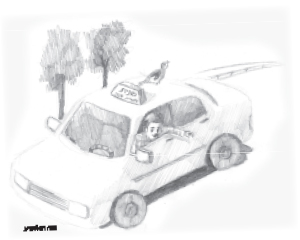

The Blessing of Shabbos
“Yaakov, please stay home a little bit. Devote half an hour to the children. They did not see you all day,” pleaded his wife. But Yaakov, dangling a ring of keys in his hand, turned to leave. Moments before the door banged closed, he said in frustration, “How can you ask me to stay home? Don’t you know the situation? We are immersed in debt. I must use every possible minute for work.”

But for some reason, he wasn’t successful. He borrowed large amounts of money in order to buy the taxi and was unable to return the money.
He spent hours driving around. Money came in but the expenses were never ending. Once, it was the meter that broke, another time it was the engine, and once he had to pay a ticket. Whatever he earned was quickly spent, and he had many debts he was unable to repay.
Yaakov was tense. His wife and children hardly saw him. He would come home for a few minutes in order to eat something or rest a little and even then, it was hard to talk to him. He was preoccupied with one thing and one thing only, getting out of debt.
Weekdays, Shabbos, Yom Tov, his hands were always on the wheel, but his financial situation did not improve. When his wife tried asking him to devote at least some of Shabbos or Yom Tov to the children, he retorted angrily, “You know that on Shabbos and Yom Tov I could make more money. There are no buses and a trip costs more. That is just the time that I need to go to work. Why don’t you understand this? Don’t you want us to start living in peace?”
His wife would remain silent and accept what he said sadly.
Yaakov had a good friend named Amnon. Amnon was not religious but one fine day, he decided to keep Shabbos. He stuck to his decision despite the mockery of his friends and his taxi was parked from Friday afternoon until after Shabbos.
His friends laughed at him. “You’re being so foolish. You’re losing the chance to make so much money.” But Amnon ignored them. He just smiled and reassured them that, boruch Hashem, parnasa was fine.
Surprisingly, when they would collect money for a friend in need, each of the drivers would have a hard time parting with just fifty liros while Amnon would easily and generously give one hundred, as though this wasn’t a large sum for him.
One day, Yaakov told Amnon about his difficult situation. “I urgently need a loan of 1000 liros. Do you have any idea as to where I can get it?”
Amnon calmly said, “I’ll lend it to you.”
Yaakov’s eyes popped. “You will lend me 1000 liros?! That’s a very large amount – you’re joking, right?”
“No, not at all. I mean it in all sincerity. I have just one request.”
Yaakov eagerly listened.
“Before I make my request, I will share my personal story with you. My son was very sick. We ran from doctor to doctor with him. We went to all the top doctors in the field and did every possible segula. We spent plenty of money but his condition was deteriorating daily. I cannot describe to you what an emotional state we were in.
“Then, as I was walking up the steps in my building to my apartment, as I imagined the worst of all, a religious neighbor stopped me. I wasn’t friendly with him and yet he said, ‘Yaakov, you look awful. What happened?’
“Believe me, I did not have the energy to talk to him. But he insisted on knowing what was going on. Then he said, ‘I have a suggestion for you. Please come into my home.’
“I was tired of futile attempts but for some reason, I agreed to go to his home. He told me, ‘In Brooklyn, there is a holy rabbi who does miracles. I will give you his address. Send him a letter and ask for a bracha. I’m telling you, he has helped thousands of people. I know many stories personally.’
“The truth is, I did not pin my hopes on this, but I did as he suggested and sent a letter to the Lubavitcher Rebbe. Within a short time, an answer arrived. The Rebbe told me to keep Shabbos, kashrus, and t’fillin. I did not want to stop working on Shabbos, because that is when you make the most money, but my wife, who has strong faith, urged me to do it. I had no choice.
“What can I tell you … It was just astonishing. From the moment I began doing as the Rebbe said, my son began his recovery. His condition improved from day to day until he recovered completely, to the amazement of all the doctors.”
“So? What does that have to do with me?” interrupted Yaakov.
“My request is that you too stop working on Shabbos and Yom Tov.”
“But …”
“Without ‘buts.’ I’ll lend you 1000 liros, without guarantors and without signatures, and I rely on you to return it to me when you can.”
“But if I don’t work on Shabbos, there is no way I will be able to repay you!”
Amnon calmly pointed to the fact, that although Yaakov worked nonstop, he wasn’t able to cover his debts.
“Who knows, maybe it is because of chilul Shabbos that you are not seeing bracha in your labor?”
Yaakov did not have many options. He needed the money urgently and he reluctantly promised to keep Shabbos for half a year. After that, he would assess the results.
Yaakov saw the blessing of Shabbos immediately. The unexpected expenses that had robbed him of all his money, stopped. His earnings were nice and he was able to pay his bills. His financial situation stabilized and he began living with peace of mind.
Most importantly, Yaakov turned from an irritable, uptight person into a relaxed man. He devoted Shabbos to his family and he took his children to shul and made kiddush and sang z’miros.
Keeping Shabbos brought light and joy into his home and it was all thanks to the Rebbe.
Beis Moshiach (staff). "The Blessing of Shabbos." Beis Moshiach, no. 926 (May 13, 2014).